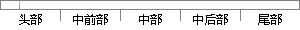

而自主的嵌入式操作系统也是有的，只不过没有用得那么广泛，因此，我国不论是嵌入式系统还是相关的嵌入式技术发展，还是有比较大的发展空间，国内的嵌入式开发前景还是非常有前景的。
片段位置图

相似结果
1
原句片段：而自主的嵌入式操作系统也是有的，只不过没有用得那么广泛，因此，我国不论是嵌入式
相似片段：网络技术在各行各业中得到了广泛的应用,我们已经到了...许多嵌入式系统根本就没有操作系统,只不过有一个...因此开发具有我国自主版权的通用嵌入式安全操作系统...
| 标题 | 《嵌入式操作系统信息安全核技术的研究与实现》 |
| 对比库 | 中国学位论文全文数据库 |
| 作者 | 杨霞 |
| 机构 | 电子科技大学 |
| 分类 | 计算机应用技术 |
| 年份 | 2004 |
| 相似率 | 67.65% （轻度抄袭） |
2
原句片段：系统还是相关的嵌入式技术发展，还是有比较大的发展空间，国内的嵌入式开发前景还是非常有前景的。
相似片段： 5前景分析编辑 嵌入式领域较新,目前发展非常快,... 还是门槛,比如月薪15k的Linux嵌入式开发职位,门槛就...化的发展,嵌入式系统技术也将获得广阔的发展空间。...
| 标题 | 《嵌入式工程师_百度百科》 |
| 对比库 | PaperRater云论文库 |
| 网址 | http://baike.baidu.com/link?url=WcdtgjDTlEU4jrFGxAwzqBGjks_7bU96uPyyNolOSFiWpd1cEJJmbPAUTNspAh5uBr_4i3peh1ntzeLwxb88eq |
| 相似率 | 68.42% （轻度抄袭） |
※ 片段修改建议 ※
近似词参考：- 开发：开辟
- 自主：自立
- 因此：是以 因而
- 前景：远景
- 不论是：不管是
- 那么：那末
- 广泛：普遍 遍及
- 国内：海内
- 系统：体系
- 发展：成长 生长
- 非常：很是 极度 十分 特别很是 异常 无比
- 还是：仍是 照旧 照样
- 相关：相干
系统自动生成语句：而自立的嵌入式操作体系也是有的，只不过没有用得那末普遍，是以，我国不管是嵌入式体系仍是相干的嵌入式技术成长，仍是有比较大的成长空间，海内的嵌入式开辟远景仍是很是有远景的。
注：本片段修改建议为系统自动生成，仅供参考。